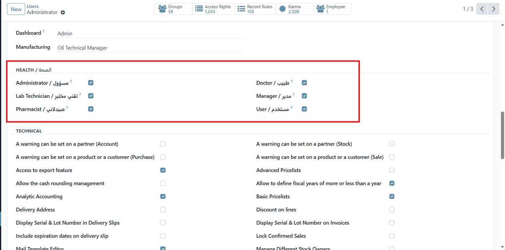
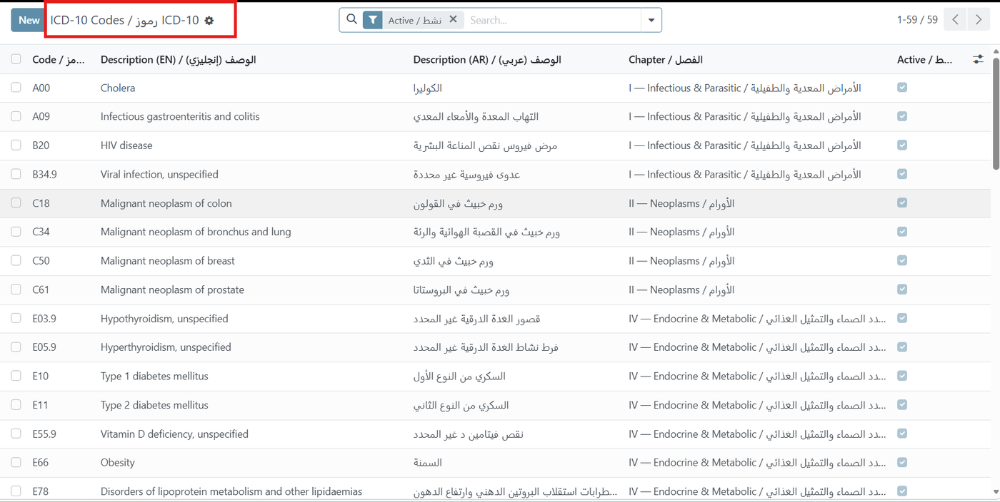
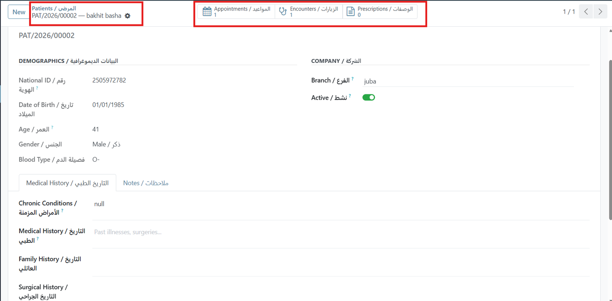

+
QUINZE Health Base
The shared foundation for the QUINZE Health Suite — security, master data, sequences and bilingual English/Arabic support.
Odoo 17Free — LGPL-3English + ArabicMulti-BranchMulti-Company
Overview
Every module in the QUINZE Health Suite builds on this shared foundation. Install it first — it defines the security model, master data, sequences and the bilingual layer that the Clinic, Laboratory, Pharmacy and API modules all rely on.
Bilingual by design. Every field label, selection value and report renders in English and Arabic together, so a single database serves both an English-speaking administrator and an Arabic-speaking clinician without switching languages. The screenshots below are taken with the interface language set to English.

Security Groups — Six dedicated roles appear in the user form: Administrator, Doctor, Lab Technician, Manager, Pharmacist and User. Each is backed by record rules scoped to company and branch.
What's Included
Six Security Groups
User, Doctor, Lab Technician, Pharmacist, Manager and Administrator, each with record rules scoped by company and branch.
Patient Data on res.partner
Medical role flags and demographics extend the standard partner — no duplicate contact database to maintain.
ICD-10 Catalogue
A curated set of diagnosis codes with English and Arabic descriptions, organised by chapter.
Multi-Branch Support
Run several branches inside one company, with data separation enforced by record rules.
Per-Company Sequences
Numbered sequences for every transactional document across the suite.
Bilingual Interface
Field labels, selection values and PDF reports render in English and Arabic together.

ICD-10 Diagnosis Codes — Diagnosis codes ship with both English and Arabic descriptions and are grouped by ICD chapter. The catalogue is editable, so you can extend it with your own entries.

Patient Demographics on res.partner — National ID, date of birth, computed age, gender and blood type sit directly on the contact record, with medical history tabs and smart buttons linking to appointments, encounters and prescriptions.
Master Data Provided
- Specialties — medical specialties with per-specialty consultation pricing
- Allergies — structured allergy catalogue linked to patient records
- Medical Units of Measure — clinical units for dosage and lab results
- Branches — physical locations within a company
Free module. This base layer is released under LGPL-3 at no cost. The Clinic, Laboratory, Pharmacy and API modules are sold separately.
قاعدة نظام QUINZE الصحي
الأساس المشترك لمجموعة QUINZE الصحية. يجب تثبيته أولاً، فهو يوفر:
- ست مجموعات صلاحيات مع قواعد وصول حسب الشركة والفرع
- بيانات المرضى مدمجة في جهات الاتصال القياسية
- كتالوج تشخيصات ICD-10 بوصف إنجليزي وعربي
- دعم تعدد الفروع داخل الشركة الواحدة
- تسلسلات ترقيم لكل المستندات
- تسميات حقول وتقارير ثنائية اللغة
هذه الوحدة مجانية بترخيص LGPL-3.
Technical Information
| Item | Value |
|---|
| Odoo Version | 17.0 Community & Enterprise |
| Dependencies | base, mail, account, product |
| License | LGPL-3 (Free) |
| Price | Free |
| Languages | English and Arabic (ar_001), bilingual labels and reports |
| Automated Tests | Included |